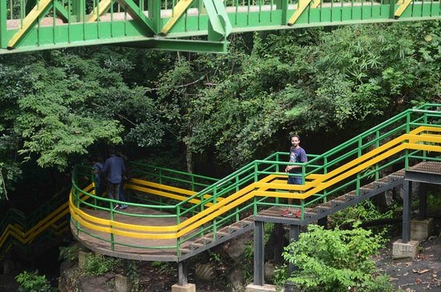
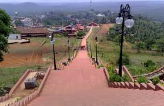
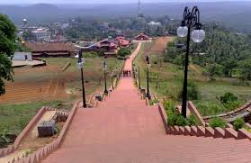
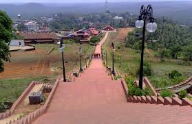

TOP DESTINATIONS
 

Malappuram district is a district in the state of Kerala, India. ... Malappuram district contains abundant wildlife and a number of small hills, forests, rivers and streams flowing to the west, backwaters and paddy, arecanut, cashew nut, pepper, ginger, pulses, coconut, banana, tapioca, and rubber plantations.
Malappuram (/mələppurəm/ (About this soundlisten)), located in the southern part of former Malabar district, is a revenue district of the Indian state of Kerala. The city of Malappuram, the district headquarters, gives the district its name. It is the most populous district in Kerala, which is home to about 12.3% of the total population of the state.[6] The district was formed on 16 June 1969 spanning an area of about 3,550 km2 (1,371 sq mi). Today it is the third-largest district in Kerala in terms of area. Malappuram district was carved out by combining some portions of the former Palakkad and Kozhikode districts- Eranad taluk and portions of Tirur taluk in the former Kozhikode district, and portions of Perinthalmanna taluk and Ponnani taluk in the former Palakkad district (before 1969).
